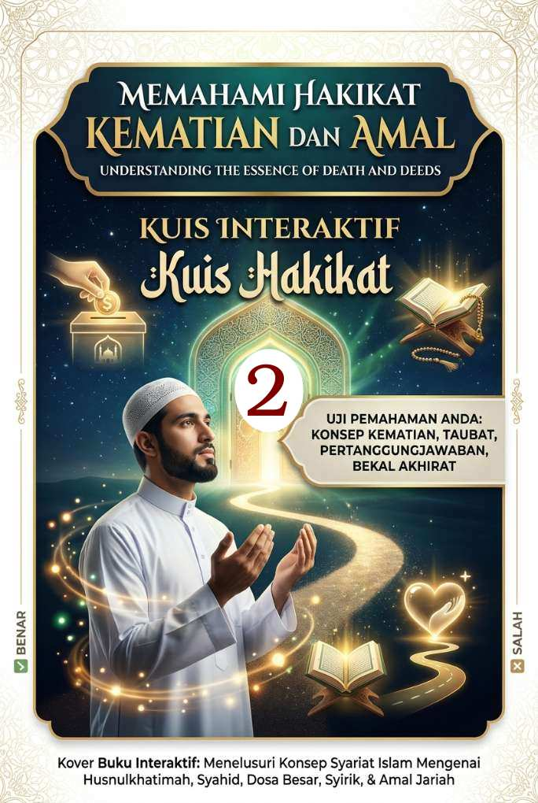

Memahami Hakikat Kematian dan Amal (2)
Kuis Interaktif · Bagian 2 dari 3
Musibah, Syahid, dan Utang
Bagian kedua membahas kematian karena musibah, derajat syahid, dan urusan utang.

Kuis Interaktif · Bagian 2 dari 3
Musibah, Syahid, dan Utang
Bagian kedua membahas kematian karena musibah, derajat syahid, dan urusan utang.
"Mati secara tragis karena terkena musibah seperti tenggelam, tertimpa longsor, dan tertimbun reruntuhan adalah tanda kerugian di akhirat."
Kematian akibat musibah duniawi seperti tenggelam, terkena wabah, atau tertimpa runtuhan bangunan/longsor merupakan salah satu jalan meraih derajat mati syahid di akhirat.
Dalil (H.R. Al-Bukhari & Muslim)
الشُّهَدَاءُ خَمْسَةٌ الْمَطْعُونُ وَالْمَبْطُونُ وَالْغَرِيقُ وَصَاحِبُ الْهَدْمِ وَالشَّهِيدُ فِي سَبِيلِ اللهِ
"Orang yang mati syahid itu ada lima: orang yang mati karena wabah, sakit perut, tenggelam, tertimpa reruntuhan bangunan, dan syahid berperang di jalan Allah."
"Mati karena sakit dengan penderitaan yang berat atau terkena wabah penyakit bisa menjadi tanda kematian yang baik."
Penderitaan berat akibat penyakit dalam (sakit perut) atau wabah penyakit menular dinilai sebagai pembersih dosa dan digolongkan sebagai syahid.
Dalil (H.R. Al-Bukhari dari Anas bin Malik r.a.)
الطَّاعُونُ شَهَادَةٌ لِكُلِّ مُسْلِمٍ
"Wabah adalah penyebab mati syahid bagi setiap muslim."
"Mati karena melawan perampok adalah mati konyol."
Mempertahankan harta benda dari aksi kejahatan secara sah dan terhormat dinilai sebagai perjuangan mulia (syahid).
Dalil (H.R. Abu Dawud dan Ahmad)
مَنْ أُرِيدَ مَالُهُ بِغَيْرِ حَقٍّ فَقَاتَلَ فَقُتِلَ فَهُوَ شَهِيدٌ
"Siapa saja yang akan diambil hartanya tanpa kebenaran, kemudian ia mempertahankannya, lalu ia terbunuh, ia adalah syahid."
"Utang tidak dianggap ketika sudah mati."
Masalah utang tetap mengikat dan diperhitungkan secara ketat. Bahkan dosa seorang syahid sekalipun tidak diampuni pada bagian utangnya.
Dalil (H.R. Muslim)
يُغْفَرُ لِلشَّهِيدِ كُلُّ ذَنْبٍ إِلَّا الدَّيْنَ
"Orang yang mati syahid itu diampuni semua dosanya kecuali utang."
Alhamdulillah
Lanjutkan ke Bagian 3: Bekal dan Amal yang Mengalir Setelah Mati.